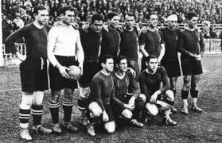
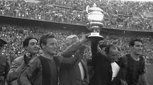
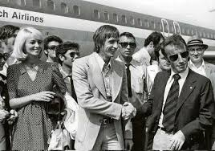

Historia del FC Barcelona
Más de 125 años de pasión, gloria y tradición culé
Línea del Tiempo
Los momentos más importantes en la historia del FC Barcelona
Fundación del Club
El 29 de noviembre de 1899, Hans Gamper fundó el FC Barcelona en el Gimnasio Solé. Un grupo de entusiastas del fútbol se reunió para crear un club que representara a la ciudad de Barcelona.

Primera Liga
El FC Barcelona conquistó su primera Liga española en la temporada 1928-29, estableciendo las bases de lo que sería una tradición de éxito en el fútbol español.
Era de las 5 Copas
Con Ladislao Kubala como estrella, el Barça conquistó 5 Copas del Rey consecutivas entre 1951 y 1953, consolidando su identidad como club de referencia en España.
Llegada de Cruyff
Johan Cruyff llegó al FC Barcelona y revolucionó el fútbol español. Su influencia marcó el inicio de una nueva era en el club, tanto como jugador como posteriormente como entrenador.
Primera Copa de Europa
El Dream Team de Cruyff conquistó la primera Copa de Europa del club en Wembley, venciendo a la Sampdoria 1-0 con gol de Ronald Koeman en la prórroga.
El Sextete
Bajo la dirección de Pep Guardiola, el FC Barcelona conquistó los 6 títulos posibles en una sola temporada: Liga, Copa del Rey, Champions League, Supercopa de España, Supercopa de Europa y Mundial de Clubes.

El Triplete MSN
Con Messi, Suárez y Neymar formando el tridente más letal de la historia, el Barça conquistó su segundo triplete (Liga, Copa del Rey y Champions League) bajo la dirección de Luis Enrique.
Palmarés del FC Barcelona
Una historia llena de títulos y gloria
Champions League
51992, 2006, 2009, 2011, 2015
La Liga
26Última: 2022-23
Copa del Rey
31Última: 2020-21
Mundial de Clubes
32009, 2011, 2015
Galería Histórica
Momentos inolvidables en la historia del FC Barcelona